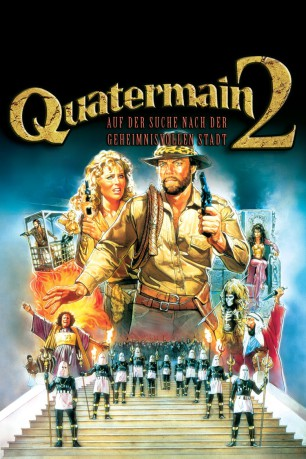

#11314 Quatermain 2 - Auf der Suche nach der geheimnisvollen Stadt
Alternativ: Allan Quatermain and the Lost City of Gold (Englischer Titel)
 
 IMDB-Wertung: 4.4 / 10
IMDB-Wertung: 4.4 / 10  Metascore: 0
Metascore: 0 
Quatermain: Kein Abenteuer ist ihm zu gefährlich - keine Frau zu schön! Mit Mut und viel Draufgängertum stellt sich der tollkühne Jäger jeder Aufgabe. Gemeinsam mit seiner Freundin Jesse macht er sich auf, um im tiefsten Dschungel Afrikas nach seinem Bruder zu suchen, der seit einer Expedition in die sagenumwobene "Goldene Stadt" als verschollen gilt. Als die beiden gemeinsam mit dem zwielichtigen Abenteurer Swarmer unterwegs ins Innere Afrikas sind, werden sie von kriegerischen Massai überfallen. In einer waghalsigen Flucht kann das ungleiche Trio entkommen und steht plötzlich vor den Toren der versunkenen Stadt aus Gold. Dort erwartet sie ein Strudel wilder Ereignisse, der sie in eine tödliche Tiefe zu reißen droht. Quatermain muß alles zeigen, was er so drauf hat...
Jahr: 1986
Dauer: 99 Minuten
FSK: 16
Land: USA Studio: Cannon Film DistributorsTonspuren: DD2.0 - ,
Untertitel:
Auflösung: 1080p (1920x816) Größe: 6717 MB
Genre: Action, Komödie, Abenteuer
Regisseur: Gary Nelson
Drehbuch: H. Rider Haggard, Gene Quintano, Lee Reynolds
Soundtrack: Michael Linn
Darsteller:
 Richard Chamberlain als Allan Quatermain
Richard Chamberlain als Allan Quatermain Sharon Stone als Jesse Huston
Sharon Stone als Jesse Huston James Earl Jones als Umslopogaas
James Earl Jones als Umslopogaas Henry Silva als Agon
Henry Silva als Agon Robert Donner als Swarma
Robert Donner als Swarma- Cassandra Peterson als Queen Sorais
- Larbi Doghmi als
- Aileen Marson als
- Martin Rabbett als Robeson Quatermain
- Rory Kilalea als
- Alex Heyns als
- Tembsie Times als
- Philip Boucher als
- Stuart Goakes als
- Fidelis Cheza als
- Nic Lesley als
- George Chiota als
Datei: X:\3-Trilogie(N-Z)\Quatermain\Quatermain 2 - Auf der Suche nach der geheimnisvollen Stadt (1986, FSK16, 1920x816).mkv seit 18.06.2019
Festplatte: HD Collection-3(N-Z)-6(A-Z)
 Alle Filme aus Gruppe '3-Trilogie(N-Z)\Quatermain'
Alle Filme aus Gruppe '3-Trilogie(N-Z)\Quatermain'